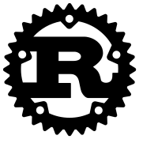
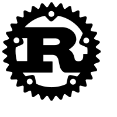
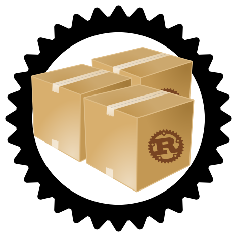
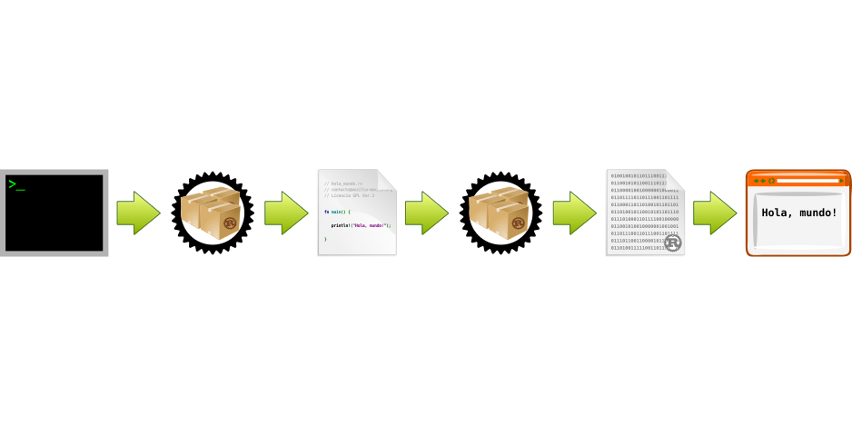
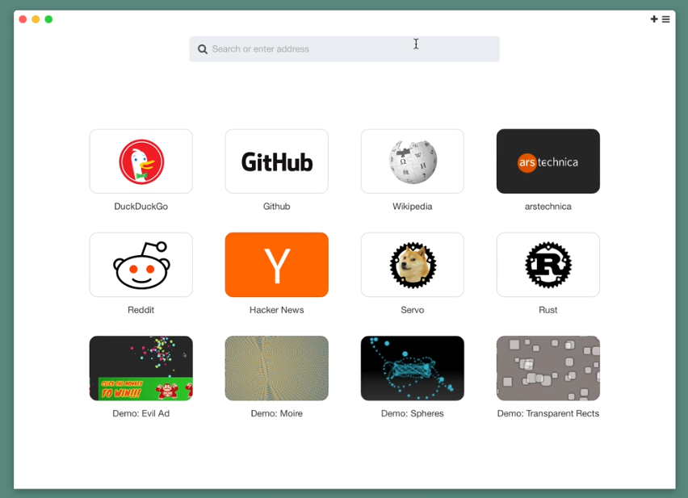
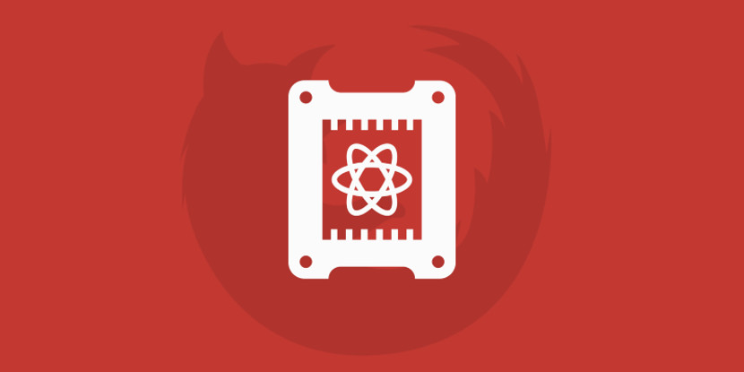
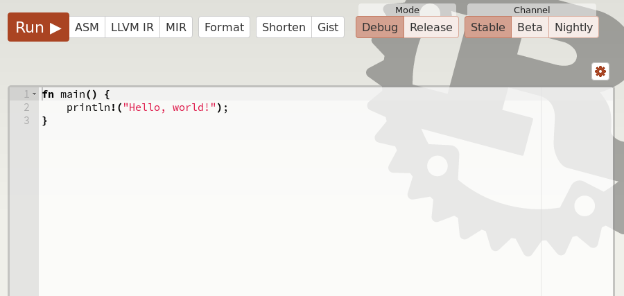

Introducción a Rust
El nuevo lenguaje de programación de Mozilla
Por: Jorge Díaz - jorge@mozilla-mexico.org
Mozillian, Moodler, Rustacean y Wikipedista

Rust es un lenguaje de programación de sistemas compilado, de propósito general y multiparadigma, que está siendo desarrollado por Mozilla.
Además Rust previene fallas de segmentación y garantiza la seguridad de los hilos de ejecución.
Rust está creado con base en tres objetivos:
NO se requiere ser "root" para instalar Rust.
Nuestro primer proyecto desde la terminal :)
Con Rust es necesario crear el archivo con el código fuente para que sea compilado y obtener el archivo ejecutable de nuestro programa.

El gestor de paquetes de Rust.
Cargo permite incluir archivos de código, paquetes y archivos binarios desde fuentes locales o remotas.
Uilizando el gestor de paquetes de Rust - Cargo.


Cargo crea el archivo de configuración del paquete Cargo.toml, el directorio para el código fuente src y el archivo principal de nuestro proyecto main.rs.
Cargo también inicia el directorio para el seguimiento de los archivos del proyecto con el sistema de control de versiones Git.

Cargo incluye el código fuente para desplegar "Hello, World!" en forma predeterminada.
!Felicidades¡ - Se ha ejecutado el programa.
Cargo crea toda la estructura de directorios para el correcto seguieminto del proyecto.
Vámonos a la Web.
Cargo descarga o verifica las dependencias.
Cargo compila y ejecuta el programa.
!Felicidades¡ - Ahora el programa se ve con el navegador web.

Motores de Renderizado:
Sistemas Operativos:
Framework Web:
Servo es un motor de renderizado y navegador web moderno y de alto rendimiento.

Es el motor de renderizado de Mozilla Firefox que toma muchos de los avances de Servo.
https://wiki.mozilla.org/Quantum


"Me lo contaron y lo olvidé; lo vi y lo entendí; lo hice y lo aprendí"
- Confucio -
El Libro de Rust
Libros Impresos
Aprende Rust en línea
Instálalo en tu servidor


Rust es el lenguaje de programación de sistemas moderno y poderoso, que permite desarrollar en forma ágil y segura, desde aplicaciones pequeñas hasta grandes proyectos.
Te invito a que sigas conociendo y aprendiendo sobre este lenguaje de programación.
Jorge Díaz
jorge@mozilla-mexico.org
Github: jdiazmx
Facebook: jorgediazmx